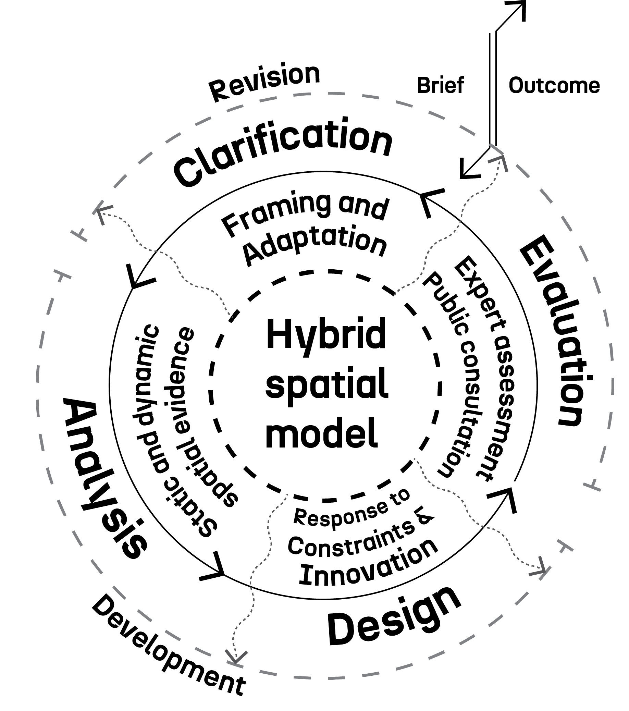
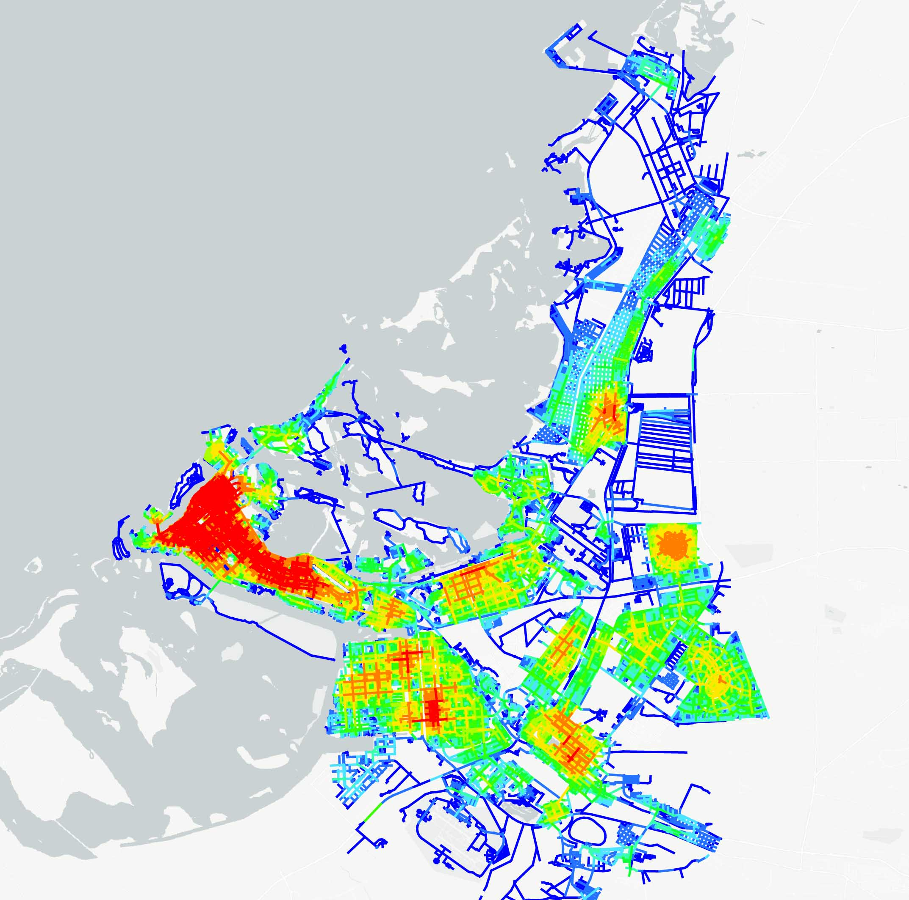

I am a geospatial data scientist and insights specialist with a Ph.D.
in Urban and Spatial Analytics from Space Syntax Laboratory, UCL. I have worked across academia, practice, and consultancy in Iran and the UK, and currently I'm involved in advisory roles where spatial evidence drives planning, design and policymaking.
I specialise in developing reproducible, scalable workflows that combine GIS, Python-based data
science, and spatial modelling to integrate complex datasets, generate interpretable indicators, and support robust
decision-making.
During my Ph.D., Supervised by Prof. Kayvan Karimi and
Dr. Tasos Varoudis, I developed a Spatial Disparity Index where a quantified spatial network model was used to train and predict
missing socio-economic data, and profile the sprawling Metropolitan fabric of Tehran for targeted intervention.

TWIN2EXPAND seeks to enhance research capabilities and applicabilities in Evidence-based Design and Planning (EBDP). Funded by UKRI and EU-Horizon, and hosted and managed at the University of Cyprus, TWIN2EXPAND was shaped by a consortium from UCL (Space Syntax Laboratory), Chalmers (Spatial Morphology Group), and Politecnico di Torino.

Funded by the Emiarti Foundation, this was a collaboration between LSE and Abu Dhabi University, looking into the state of urban structure, its development and its impact on the city-dwellers.